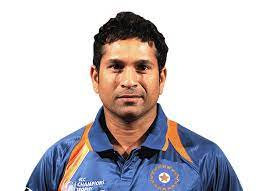

Sachin Ramesh Tendulkar
Sachin Ramesh Tendulkar (/ˌsʌtʃɪn tɛnˈduːlkər/ (About this soundlisten); pronounced [sət͡ʃin t̪eːɳɖulkəɾ]; born 24 April 1973) is a former international cricketer of India who served as captain of the Indian national team. He is regarded as one of the greatest batsmen in the history of cricket.[6] He is the highest run scorer of all time in international cricket, and the only player to have scored one hundred international centuries, the first batsman to score a double century in a One Day International (ODI), the holder of the record for the most runs in both Test and ODI cricket, and the only player to complete more than 30,000 runs in international cricket.[7] In 2013, he was the only Indian cricketer included in an all-time Test World XI named to mark the 150th anniversary of Wisden Cricketers' Almanack.[8][9][10] He is affectionately known as "Little Master" or "Master Blaster
Shakib Al Hassan
Shakib Al Hasan (Bengali: সাকিব আল হাসান; born 24 March 1987), also known as Saqibul Hasan, is a Bangladeshi international cricketer and widely considered to be one of the greatest all-rounders of all time.Born in Magura, Khulna, Shakib started playing cricket at an early age. According to Prothom Alo sports editor Utpal Shuvro, Shakib "was fairly proficient at cricket and was often hired to play for different villages and teams".[14][15] In one of those matches, Shakib impressed an umpire who arranged for him to practice with the Islampur Para Club, a team in the Magura Cricket League. During the practice session, Shakib batted aggressively and bowled fast, as he usually did, but also chose to experiment with spin bowling which proved to be not so effective.
 Abraham Benjamin de Villiers
Abraham Benjamin de Villiers
Abraham Benjamin de Villiers (born 17 February 1984) is a former South African professional cricketer. He holds the record for fastest 50,100 and 150 in ODI cricket and he is the only batsman ever to average above 50 with a strike rate of above 100 (batsmen with minimum 5000 runs). He is widely regarded as one of the greatest batsmen of all time. He is credited for revolutionizing the game by regularly utilizing attacking unorthodox shots particularly against the yorker. De Villiers was named as the ICC ODI Player of the Year three times during his 15-year international career and was one of the five Wisden cricketers of the decade at the end of 2019.